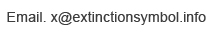
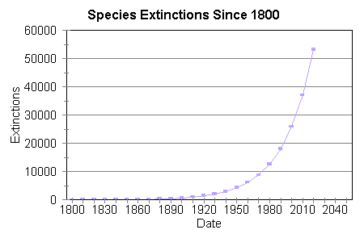

The world is currently undergoing a mass extinction event, and this symbol is intended to help raise awareness of the urgent need for change in order to address this crisis. Estimates are that somewhere between 30,000 and 140,000 species are becoming extinct every year in what scientists have named the Holocene, or Sixth Mass Extinction.
This ongoing process of destruction is being caused by the impact of human activity.
Within the next few decades approximately 50% of all species that now exist will have become extinct. Such a catastrophic loss of biodiversity is highly likely to cause widespread ecosystem collapse and consequently render the planet uninhabitable for humans.
In order to spread the message as widely as possible, please create this symbol in any location you feel able to.
Thank you.
Large symbol to download and use freely for non-commercial purposes - Symbol
Flickr - Join the flickr group and post examples of the symbol that you've created - Flickr group
Twitter - Follow @extinctsymbol
Direct link to this page, please disseminate - www.ExtinctionSymbol.info

http://en.wikinews.org/wiki/Largest_mass_extinction_in_65_million_years_underway,_scientists_say 